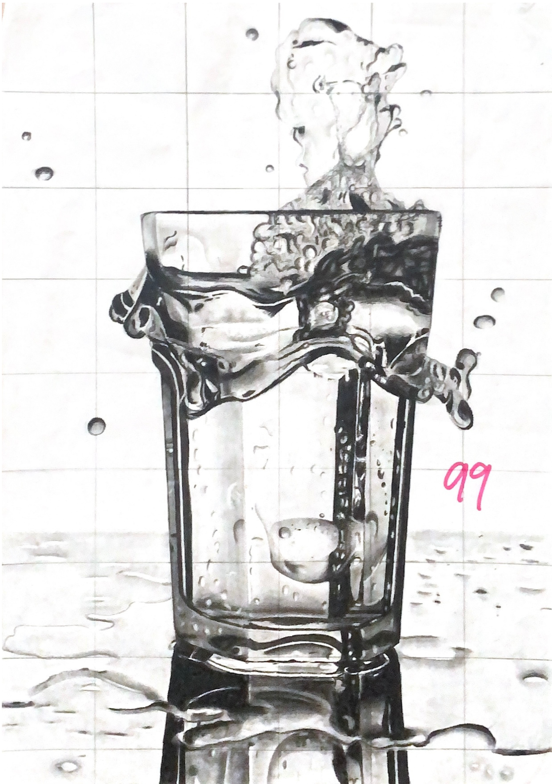
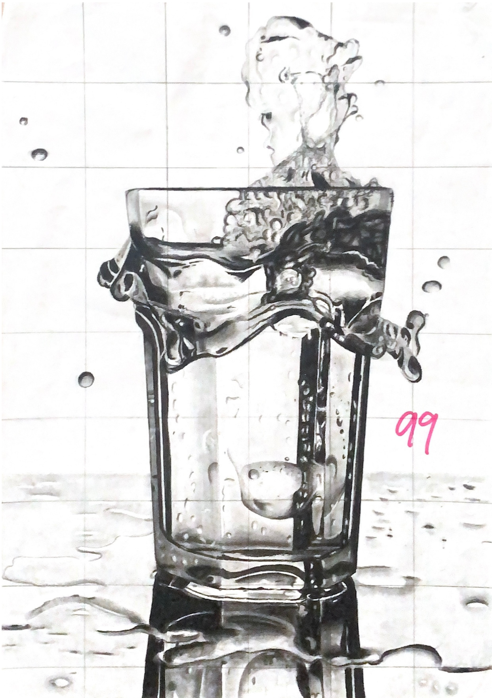
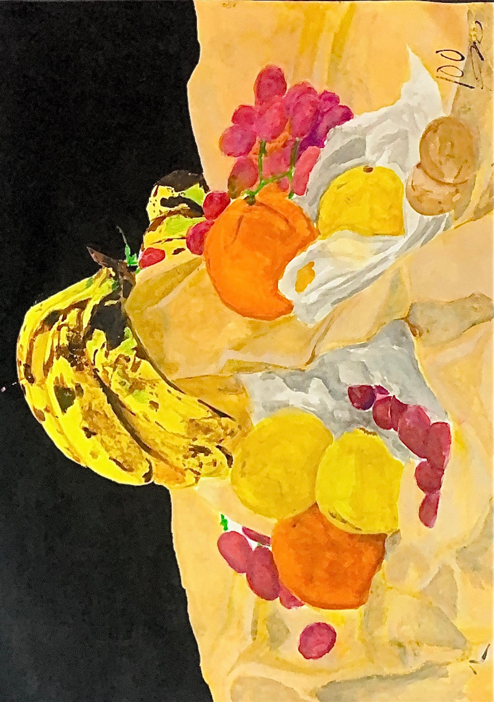
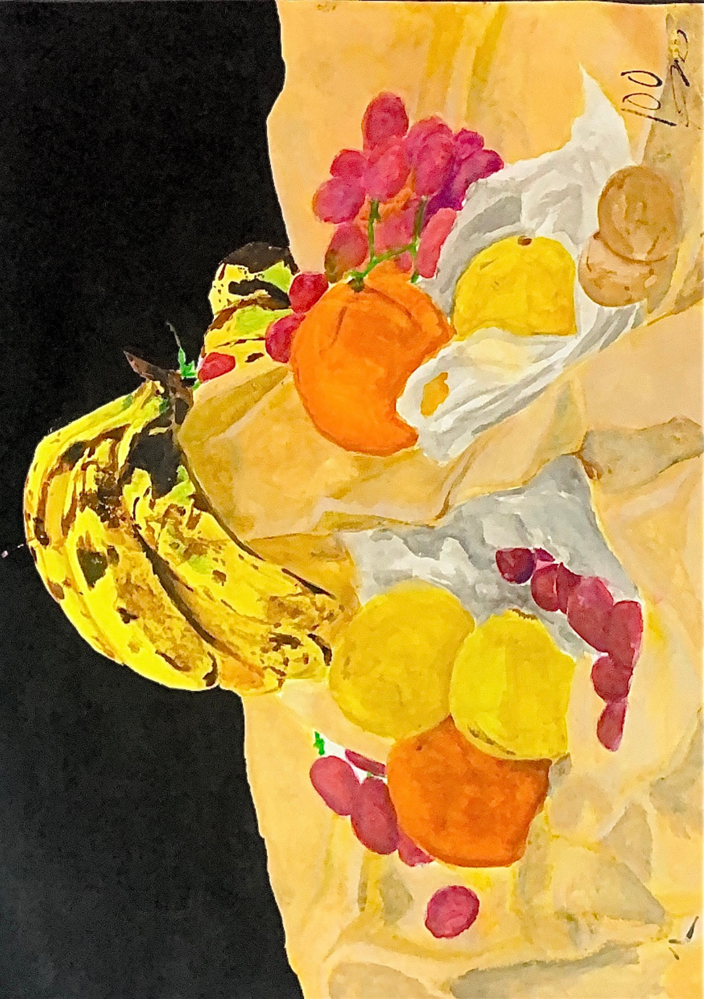
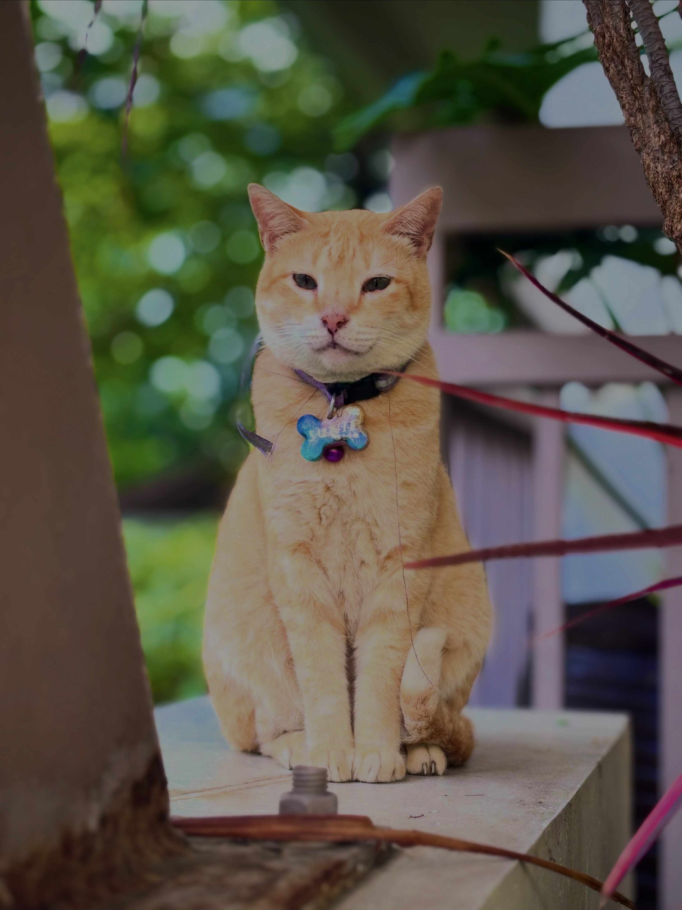

About Me
Hi! I am Marianne Patricia L. Dela Cruz, but you can call me Ianne for short. I am a second-year Multimedia Arts student who loves exploring different forms of visual storytelling. My passion lies in graphic design, and I am also learning more about photography and digital art.
I was born and raised in Marilao, Bulacan, and I enjoy expressing creativity through art, design, and music. I believe that creativity is not just about aesthetics but also about communicating stories that inspire people.
My Hobbies
- Graphic design and digital art
- Photography and videography
- Playing piano and guitar
- Fitness and jogging

Traditional Art
 

 

Digital Art


Graphic Design


Photography
